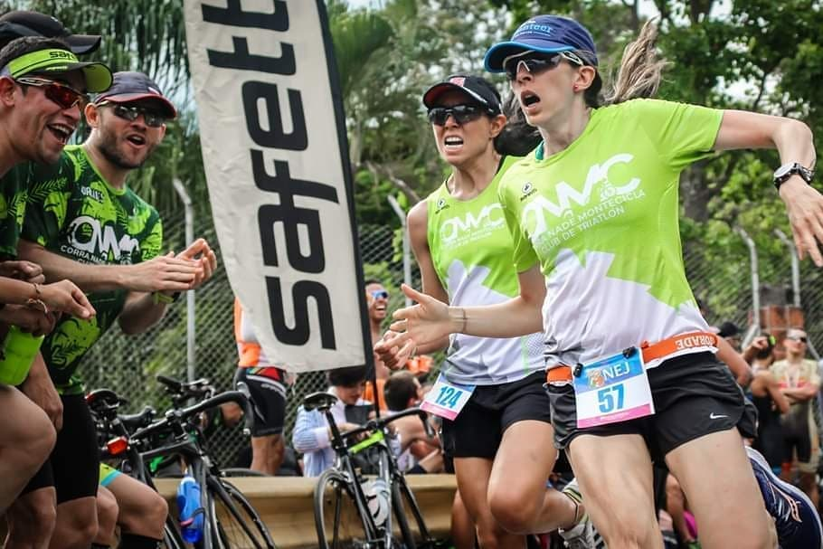

Atletismo
Dicho de una persona: Andar rápidamente y con tanto impulso que, entre
un paso y el siguiente, quedan por un momento ambos pies en el aire.
Natación
La natación es un deporte que consiste en el desplazamiento de una persona en el agua, sin que
esta toque el suelo.

Ciclismo
El ciclismo es un deporte aeróbico que contribuye a mejorar nuestro sistema cardiovascular y
fortalece el
corazón, lo que permite tener una mejor condición física.
Lesiones comunes y como tratarlas cuando corres
Se recomienda a los corredores tomar estas medidas para ayudar a minimizar
las lesiones más comunes como lesión del menisco de la rodilla: Utilizar un calzado
adecuado, calentarse antes de correr, añadir ejercicios de estiramiento y flexibilidad a la
rutina
¿Cuáles son las lesiones más comunes en la natación?
Una de las lesiones más comunes es la tendinitis del manguito rotador. El movimiento repetitivo
que realiza esta articulación puede producir dolor e inflamación. La mejor prevencón es una
buena corrección de la técnica.
¿Qué lesiones provoca el ciclismo y como prevenirlas?
Las lesiones más habituales en ciclismo incluyen tendinitis rotuliana y del tendón de Aquiles,
los roces con el sillín y el dolor de cuello o espalda, para prevenirlas se recomienda: calentar
antes de subir a la bicicleta, regular la altura del sillín y el manillar.